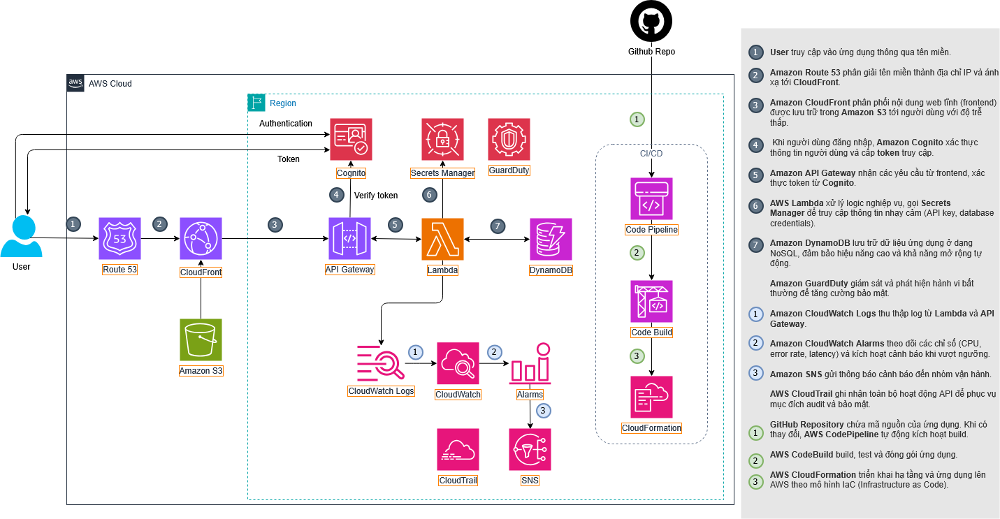

Proposal
Teaching Center Management System
AWS Serverless solution for learning center management project
1. Executive Summary
To address the challenges in operating an education center, the Teaching Center Management System is designed to integrate all core business operations: Human Resource Management (HRM), Student Information System (SIS), Customer Relationship Management (CRM), Education Payment, and Parent Connection. The goal is to optimize management processes, improve operational efficiency, and enhance the overall learning experience.
In the future, the system aims to expand with advanced technologies such as Artificial Intelligence (AI) and the Internet of Things (IoT) to personalize learning paths, develop virtual learning assistants, and modernize the infrastructure with smart classrooms and automated facility management.
2. Problem Statement
What’s the Problem?
Educational centers today face difficulties in managing both online and offline classes in a unified way. Processes such as course registration, attendance tracking, progress monitoring, and result reporting are still mostly done manually or across multiple separate platforms, leading to inconsistency and poor data control.
In addition, there is a lack of a centralized system to store and analyze learning data in real time. Relying on third-party solutions is not only costly but also complex and hard to customize to specific needs. As the number of students and classes grows, current systems lack scalability and automation, reducing operational efficiency and the overall learning experience.
The Solution
The Teaching Center Management System platform is deployed based on AWS Serverless architecture, helping to optimize costs, automatically scale, and ensure high availability.
Users access the system through Amazon Route 53 and Amazon CloudFront, improving page loading speed and protecting against DDoS attacks. The web interface is statically hosted on Amazon S3, providing fast and stable content delivery.
User authentication is performed through Amazon Cognito, ensuring security for student, teacher, parent, and administrator accounts. After logging in, user requests are processed through Amazon API Gateway, triggering AWS Lambda to execute core business logic such as account management, class management, course registration, attendance tracking, result updates, and schedule lookup. All data is stored in Amazon DynamoDB.
Documents, lecture videos, and assignments are stored in Amazon S3; system logs are sent to Amazon CloudWatch Logs for monitoring. CloudWatch Alarms and Amazon SNS automatically send alerts when errors or abnormal activities are detected. AWS Secrets Manager protects sensitive information such as API keys or service connection details.
The development and deployment process is automated through the AWS CodePipeline – CodeBuild – CloudFormation chain, ensuring seamless CI/CD, reducing configuration errors, and shortening deployment time. AWS CloudTrail and Amazon GuardDuty record API activities, detect threats, and protect the system from security risks.
The solution provides a unified, secure, scalable, and cost-optimized platform, helping education centers efficiently manage both online and on-site training activities, improving the learning experience and teaching efficiency.
Benefits and Return on Investment
- Accelerated development and deployment: Automated CI/CD (CodePipeline, CodeBuild, CloudFormation) reduces the time to release new features from several days to just a few hours.
- Optimized operational cost: Serverless architecture (Lambda, DynamoDB, API Gateway) charges only per request, saving 40–60% compared to traditional EC2-based systems.
- Comprehensive security: GuardDuty, CloudTrail, and Secrets Manager help detect risks early, minimizing the chance of data leaks or attacks.
- High access performance: CloudFront CDN and Route 53 increase access speed, reducing latency by 50–70% compared to regular hosting.
- Flexible scalability: The system automatically scales based on traffic, without manual intervention.
- Proactive monitoring: CloudWatch + SNS provide real-time alerts, enabling the technical team to handle incidents promptly.
3. Solution Architecture

Detailed description
-
Application Flow
- Users access the system through a domain name, where Route 53 resolves the domain into an IP address to map it to CloudFront.
- CloudFront delivers static web content (frontend) from Amazon S3 to users quickly.
- API Gateway receives and manages all API requests from CloudFront.
- API Gateway integrates with Amazon Cognito to authenticate users via JWT tokens. API Gateway uses Cognito to verify the JWT token included in the user’s request before allowing API access.
- After successful authentication, API Gateway triggers a Lambda function (the main processing component of the application).
- If Lambda needs to access sensitive information (such as database passwords or third-party API keys), it calls Secrets Manager to retrieve those secrets.
- The Lambda function executes business logic, queries, and stores data in Amazon DynamoDB (a NoSQL database).
- Lambda automatically records execution logs and sends them to CloudWatch Logs. These logs include requests, errors, and metrics for monitoring and troubleshooting.
-
Security Flow
- AWS CloudTrail records every API action in the account.
- AWS GuardDuty continuously analyzes log sources such as CloudTrail, VPC Flow Logs, and DNS Logs from Route 53 to detect malicious activity (e.g., compromised IAM credentials, unusual IP access). When detected, GuardDuty generates a Finding and triggers alerts or automated responses via SNS or Lambda.
-
Monitoring Flow
- CloudWatch Logs collect logs from Lambda.
- CloudWatch Metrics are created from CloudWatch Logs using Metric Filters, and CloudWatch Alarms are configured based on these metrics to detect issues and send alerts.
- SNS automatically sends notifications via email or registered endpoints when incidents occur.
- CloudTrail records all API calls that happen in the account (e.g., who deleted an S3 bucket, who accessed Secrets Manager). This data is used for administrative activity tracking and security incident investigation. CloudTrail works alongside CloudWatch to log all API actions for auditing and security purposes.
-
CI/CD Flow
- The application’s source code is stored in a GitHub repository.
- After connecting and configuring GitHub with CodePipeline, when the source code on GitHub is updated, CodePipeline automatically receives a webhook event to fetch the latest code. It orchestrates the entire CI/CD process with defined stages: Source – Build – Deploy.
- CodeBuild retrieves the source from CodePipeline. CodeBuild runs the
buildspec.yml file to install dependencies, run unit tests, and build the application into an artifact (zip, image, etc.).
- After CodeBuild completes, CodePipeline triggers CloudFormation to automatically create or update all resources (e.g., API Gateway, Lambda, DynamoDB, S3, IAM Roles, etc.) in the AWS environment.
AWS Services Used
|
Services |
Description |
| Frontend & Routing |
Route 53, CloudFront, S3 |
Domain routing, content delivery, static hosting |
| Backend & Logic |
API Gateway, Lambda, DynamoDB, Secrets Manager, Cognito |
Serverless logic, data, authentication |
| Security & Monitoring |
GuardDuty, CloudWatch Logs, CloudWatch Alarms, CloudWatch Metrics, SNS, CloudTrail |
Threat detection, alerting, auditing |
| CI/CD & IaC |
CodePipeline, CodeBuild, CloudFormation, SAM |
Automated deployment and infrastructure management |
4. Technical Implementation
Implementation Phases
-
Development Stage
- Complete business logic and main flows for Lambda functions.
- Write the
template.yaml file describing resources: API Gateway, Lambda Functions, DynamoDB, Cognito.
- Use AWS SAM CLI to deploy code and
template.yaml to LocalStack for local testing.
-
Deployment Stage
- Use AWS SAM CLI to deploy code and
template.yaml to the actual AWS environment.
- Configure AWS CodePipeline and AWS CodeBuild to automate the CI/CD process.
Technical Requirements
- Have an AWS account using the Free Tier to deploy and use resources normally.
- The
template.yaml file must be properly configured to fully describe all services.
- The system must have an automatic rollback mechanism in case of deployment failure.
5. Timeline & Milestones
Project Timeline
-
Before Internship (Week 0): Study AWS services to prepare for the project. Conduct surveys and analyze requirements of real education centers (HR, Training, Admissions).
-
Internship (Week 1–12):
- Week 1–3: Design the system, user interface, and overall architecture; prepare documentation (proposal, diagrams, SAM templates).
- Week 4–8: Develop core modules (student, teacher, and class management; user authentication). Perform local testing with LocalStack.
- Week 9–11: Integrate modules, complete the CI/CD pipeline, and deploy the system to the actual AWS environment.
- Week 12: Conduct overall testing, evaluate results, finalize reports, and propose future development directions.
-
Post-Internship (Expansion Phase – After Week 12): Upgrade the system, optimize performance, and integrate AI (personalized learning analytics) and IoT (smart classroom management).
6. Budget Estimation
You can find the budget estimation on the AWS Pricing Calculator.
Or you can download the budget estimation file pdf | csv | json.
Infrastructure Costs
- S3 Standard: 0.32 USD/month (10 GB, 5,000 PUT requests, 100,000 GET requests)
- CloudFront: 1.33 USD/month (10 GB, Data transfer out to origin 0.1 GB, Number of HTTPS requests 100,000)
- Amazon API Gateway: 0.38 USD/month (300,000 requests)
- AWS Lambda Function – Include Free Tier: 0.00 USD/month (100,000 requests, 512 MB storage)
- Amazon DynamoDB: 0.62 USD/month (2 GB data storage, 50,000 writes, 200,000 reads)
- Amazon Cognito Lite Tier: 0.00 USD/month (500 MAUs)
- Amazon CloudWatch: 2.10 USD/month (3 custom metrics, 1 GB logs, 1 dashboard, 2 alarms)
- Amazon GuardDuty: 0.00 USD/month (Free 30 days per region)
- Amazon Route 53: 0.90 USD/month (1 hosted zone, 1M standard DNS queries)
- AWS Secrets Manager: 0.40 USD/month (1 secret)
- AWS CloudTrail: 0.00 USD/month (1 trail)
- Amazon SNS: 0.00 USD/month (1M requests, 1M Lambda deliveries)
- AWS CloudFormation: 0.00 USD/month
- AWS CodeBuild: 0.25 USD/month (on-demand EC2 general1.small, 5 builds/month)
- AWS CodePipeline: 0.00 USD/month (100 minutes/month)
Total: 6.30 USD/month, 75.60 USD/12 months
7. Risk Assessment
Risk Matrix
- AWS configuration errors (IAM, Lambda, API Gateway, Cognito): High impact, medium probability
- Exceeding AWS Free Tier limits: Medium impact, low probability
- Data loss on S3/DynamoDB: High impact, low probability
- Integration errors between AWS services: Medium impact, low probability
Mitigation Strategies
- AWS configuration: Carefully check
template.yaml and test deployment on LocalStack before deploying to production.
- Exceeding Free Tier limits: Monitor costs regularly, set up billing alerts, and optimize resources.
- Data loss: Enable S3 Versioning and perform regular DynamoDB backups.
- Service integration errors: Ensure all services operate in the same Region, verify IAM roles and cross-service permissions.
Contingency Plans
- Deployment errors: Roll back using AWS SAM CLI or restore previous Lambda versions.
- Budget overruns: Pause non-essential services, optimize architecture and resource usage.
8. Expected Outcomes
- The teaching center management system was successfully deployed on the AWS Serverless platform, ensuring stable, secure, and scalable operations.
- Operational costs are optimized by leveraging the AWS Free Tier and serverless architecture, reducing initial infrastructure investment.
- High access performance is ensured, with fast response times and flexible scalability.
- Data security is maintained through backup mechanisms, versioning, and strict access control.
- CI/CD integration enables automated deployment, testing, and rollback, ensuring an efficient and reliable development process.